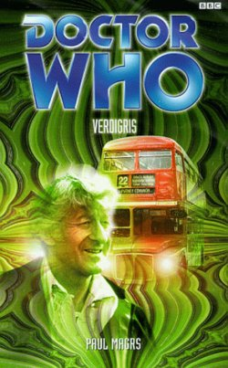

|
Verdigris
|
BASIC PLOT DOCTOR COMPANIONS MATERIALISATION CIRCUIT Pg 242 Inside a bar on a far-flung outpost. PREPARATORY READING CONTINUITY REFERENCES Pg 15 Reference to Cybermen and Sontarans. "Or dinosaurs wreak havoc in Scarborough..." Invasion of the Dinosaurs. Pg 16 Reference to the Dalek Supreme. Pg 20 "Tom would mention meeting Cleopatra and she would have to launch into a full-scale account of her trip to Atlantis." The Time Monster. Pg 23 Reference to Arcturus (The Curse of Peladon). "Is this the same Lethbridge-Stewart I met during that business with the Celaphopods in Venice? And on Mars with the Terrible Zodin?" Uncertain reference, The Five Doctors. Pg 28 "What bliss to be seated in the car with the Doctor and Jo and Tom in an era before canon-death! Before everything was altered. It seems almost unfair to warn the Doctor of what will happen years hence from now..." Possible reference to Interference. Pg 29 "And indeed he mutters something about what happened once when they were en route to Devil's End..." The Daemons. Pg 41 Reference to Ice Warriors (The Ice Warriors et al). Pg 42 Reference to Drashigs (Carnival of Monsters) Pg 62 "She knew that every sharply drawn breath was being picked up by microphones no larger than a cat's nose. She had seen the ten-by-twelve black and white glossies on which luckless intruders were unwittingly captured." Jo's journey through UNIT HQ is captured via a series of telesnaps, with still black and white pictures and crisp audio. "Of the pictures remaining from this evening (much of the UNIT material having been junked in the late 1970s)" Reference to the junkings of the black and white episodes (and some colour UNIT stories) in the 1970s. Pg 65 "Daleks and spaceships and guns" Day of the Daleks. "Think about every alien artefact or creature you have ever seen. Weren't they always surrounded by a crackling nimbus of blue light?" Colour Separation Overlay. Pg 87 "Who is this terrible woman?" Paraphrase of a quote from Dimensions in Time. Pg 99 "A fuel shortage! An invasion by dinosaurs! Ha!" Invasion of the Dinosaurs. Pg 106 "The Guardian: Home Secretary Says: 'What Robot Army in Sewers? We didn't put it there.' The Financial Times: 'Southern England Meteorite Shower. Stock Market Responds with Alarm.' The Daily Mail: 'These Daffodils Can Kill!' The Sun: 'My Yeti Hell!' The Invasion, Spearhead from Space, Terror of the Autons, The Web of Fear. Pg 106 "That's a Dalek!" The Children of Destiny build a fake Dalek shell. Pg 107 "An admittedly not-very-realistic-looking vegetable creature, covered in roots and tubers and bright orange in complexion." A mock-up on an Axon (The Claws of Axos), although the "vegetable" line is a reference to the costume being reused in The Seeds of Doom. Pg 108 "That would have been from when the Doctor and UNIT were trying to convince Whitehall that a race of prehistoric reptile men were living underneath Derbyshire and wanted to reclaim the world. Well, I saw the reports. They looked rubbish. And as for those so-called Sea Devils..." Doctor Who and the Silurians, The Sea Devils. Pg 117 "Where did you come from? The New Towns under the Capitol? The slums, as far as the High Council is concerned." These were mentioned in The Eight Doctors. "They know you're not just some simple renegade. They know more about your past lives than you even think." The Brain of Morbius/Lungbarrow. Pg 118 "Whatever happened to that snooty-looking bird you used to knock about with?" Romana. "It was round about the time you used to drag along that whatsit - that daft robot dog of yours." K9. Pg 122 "We only wanted to live in peace on a fairly advanced world, once our own had been shattered and destroyed by the evil Valceans from the Obverse dimension." The Blue Angel. Pg 123 "We've seen enough of war, after the Enclave and the Obverse and all that." The Blue Angel. Pg 133 "Her Granny was dead set on attacking our enemies, the Glass Men of Valcea" The Blue Angel. Pg 157 "Jo gave a squeal of fright when they walked into the dining room and there was a Dalek waiting there. [...] 'But they're real!' she burst out. 'I've seen them.'" Day of the Daleks. Pg 161 "The little Doctor? The first one who came here?" The second Doctor. "Because.. perhaps you remind me a little bit of my mother." Sally was the Doctor's mother in an alternate reality in The Blue Angel. Pg 192 "Yes, I remember you telling me how it fell off that cliff face on Peladon all the way to the bottom and... Oh." The Curse of Peladon (but see Continuity Cock-Ups). Pg 195 "Daleks, Axons, Cybermen. Whatever you say, these are merely fairytale creatures used to frighten children." Day of the Daleks, The Claws of Axos, The Invasion. Pg 199 Reference to the fourth Doctor and Sarah. Pg 202 "'Send one of the fleetest ships,' the handbag says. 'The Nepotist, say." The Blue Angel. Pg 218 "I absolutely loved all that, back when I was in the Sisterhood of Karn." The Brain of Morbius. Pg 219 "It was all down to treacherous Ohica, newly appointed High Priestess (oh, those mad staring eyes!) and it was she who led the wounded Morbius to the Death Zone on Gallifrey, reactivated the Time Scoop, interfered with the blessed remains of Rassilon, discovered that I was disguised as part of the coven and Time Scooped all of me - every one of my incarnations - into the Death Zone and tried to put paid to all of my delightful, various selves with a series of terrifying, time-snatched monsters: Voord and Zarbi and Mechanoids and what have you." The Brain of Morbius, The Five Doctors, The Keys of Marinus, The Web Planet, The Chase. Pg 230 "This was just after that terrible affair with Morbius and I was still under the influence of the magicks and arcane trickery of the Sisterhood of Karn." The Brain of Morbius. Pg 237 "I've planned a few meetings here and there... Skaro, for example." Possible reference to Frontier in Space, or maybe The Telemovie. "If we could somehow arrange it so that Omega learns of the Doctor's presence on Earth, we might just..." The Three Doctors. Pg 241 "Look apparently junior cabinet ministers have disappeared from their London homes and there's a report in to say that we have reason to believe they are being held captive on the moon!" Uncertain reference. "It could be the Cybermen, I suppose. They have a base up there..." The Invasion. "Someone at a bird sanctuary. Apparently these horrific globs of something or other are appearing out of nowhere and attacking people!" The Three Doctors. Pg 242 "It was some time later after the thrilling, extraordinary affair of The Three Doctors (in which Doctors One, Two and Three were reunited somewhere over the rainbow in a nightmarish universe of antimatter to defeat a common and lunatic foe called Omega), that the Doctor eventually regained his freedom." The Three Doctors. OLD FRIENDS AND OLD ENEMIES Sally, who might be the Doctor's mother (and reminds him of her) was in The Blue Angel, although here she's running a newsagent and isn't a mermaid. NEW FRIENDS AND NEW ENEMIES Verdigris, Ambassador Borges, Ambassador Katra, Ambassador Saldis.
CONTINUITY COCK-UPS PLUGGING THE HOLES [Fan-wank theorizing of how to fix continuity cock-ups] FEATURED ALIEN RACES Pg 69 Robot sheep, who slide on castors and have glowing eyes that can shoot laser bolts. Pg 98 Aliens who look precisely like Wells' Martians (this is their true form, by chance). They sit in giant metallic eggcups with three stilts, have tentacles and smell of sulphur. They call themselves the Meercocks (page 129) and disguise themselves as characters from fiction. Pg 111 Councillor Borges is a fleshy, toffee-coloured alien with eyes on hairlike stalks. Pg 159 A viscous yellow creature with stinking appendages that can grow to enormous sizes or be shrunk inside a jar. Pg 170 Verdigris, a copper-green coloured creature who looks like an unfinished statue with emerald eyes and a slit of a mouth. Pg 175 Malevolent trees. Pg 176 A gryphon and a unicorn (statues brought to life). Pg 195 Ambassador Saldis looks precisely like a golden handbag. Pg 207 Ambassador Valcino is a small pink brain with eight feeble appendages, but has augmented it to have a hugely muscled, strapping body. Ambassador Katra has long, tattered hair, half black, half white and resembles a witch. Pg 208 Goblin-like creatures and super-advanced mice. Pg 214 An egglike creature with studded eyes, a furred creature covered in tiger stripes, an amorphous blob and something else that no one could get the hang of looking at. Pg 216 A collection of aliens, including the feathery, the scaly, silicon and vegetable creatures, machine-like creatures, beings composed of pure energy, aqua-beings and things that looked like nothing anyone had seen before. Pg 222 A skinny, evil-looking jackal-like creature. FEATURED LOCATIONS Pg 59 London (or wherever UNIT HQ is this week). Pg 96 A space station. Pg 77 Great Yarmouth. Pg 149 An escape pod. Pg 204 The desert world Makorna (the name is revealed on page 213). Pg 221 Wales. Pg 243 A far-flung outpost. IN SUMMARY - Robert Smith? |
|
 |